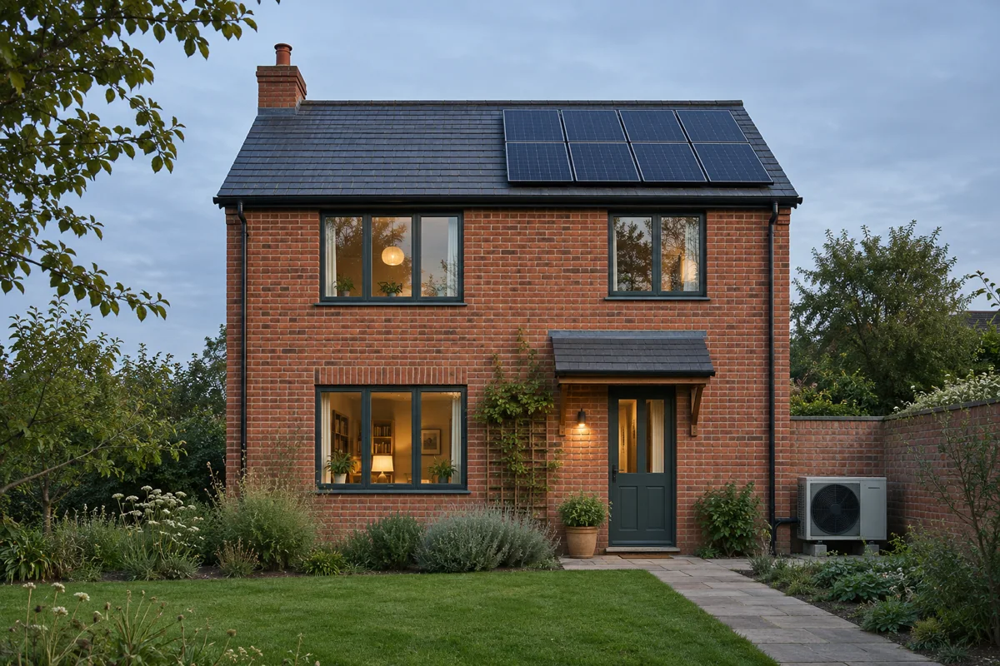

Low Carbon London
Half-hourly electricity readings from a historical London trial. This project uses a short extract for one household.
Publisher datasetGreat Britain · Open research
Explore half-hourly smart-meter readings, see how monitored homes respond to colder weather, and compare what tariffs and upgrades could cost.

Each study links to its source data, assumptions and reproduction steps.
Check the coverage, available channels and access terms before combining sources.
Half-hourly electricity readings from a historical London trial. This project uses a short extract for one household.
Publisher datasetVolunteer systems with metered heat and electricity. Indoor and outdoor temperature are available for selected sites.
Public APIHistorical daily station temperatures used as a regional weather proxy for the anonymised London meter.
Station recordGas, electricity, indoor sensors and surveys from 255 Scottish-area homes. See the release for access and licensing.
University archiveBritish heat-pump monitoring with cleaned daily and half-hourly datasets. Download access varies by release.
Reports and datasetsHistorical regional unit prices with validity timestamps. The thermostat study uses published Agile prices.
Tariff APIOne Low Carbon London household from October to November 2012.
The longest gap was 24 hours. Observed totals exclude missing intervals.
Ten held-out complete local days. Lower mean absolute error is better.
Study and exclusionsFive monitored heat pumps provided matched space heat, electricity and temperatures. Models fitted on 2023 heating-season days were tested on 2024 observations.
| System | W/K | 95% interval |
|---|---|---|
| 3 · Air source | 132 | 104–153 |
| 4 · Air source | 143 | 121–165 |
| 8 · Air source | 251 | 230–266 |
| 9 · Air source | 196 | 179–209 |
| 11 · Ground source | 93 | 55–125 |
Equipment types come from registry metadata. The intervals reflect variation across resampled weeks.
Adding indoor temperature improved held-out forecasts at two of the five sites compared with an outdoor-only model.
Among the fixed schedules tested for four air-source systems, an 18°C night setback ranked first under the illustrative flat tariff. Fixed preheat ranked first under the study’s off-peak and Agile prices. The comfort screen uses modelled indoor temperature.
Controls and assumptionsReprice all recorded London meter intervals, including 100.376 kWh overnight and 446.580 kWh during the day. Compare variable charges on the same consumption. Standing charges are excluded.
Flat is £17.66 cheaper.
Meter trace and tariff methodCompare modelled annual operating bills for a mid-terrace home. These scenarios exclude installation costs. Solar output, heating demand and both tariffs use the study’s illustrative assumptions.
£412.77 lower per year before installation costs.
Full scenario table and economics